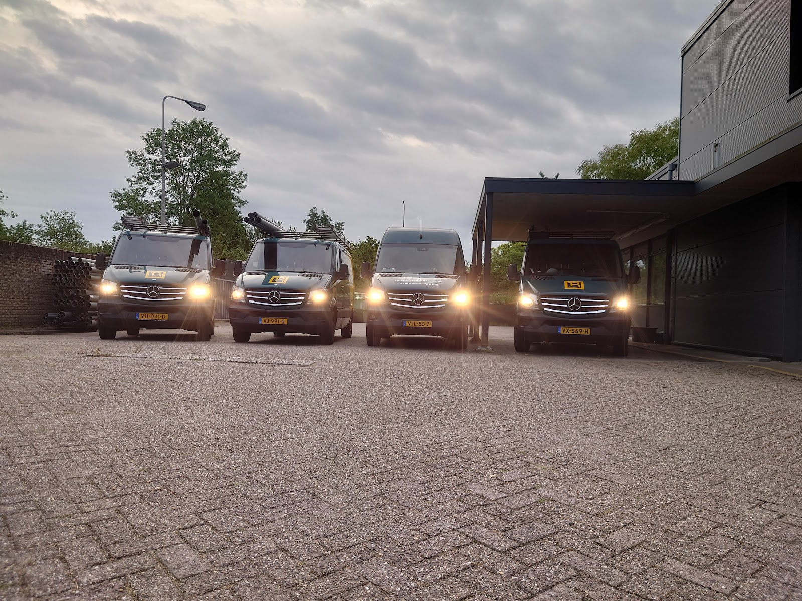
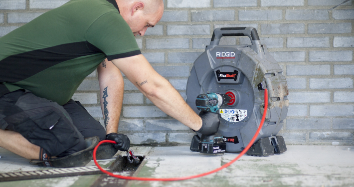
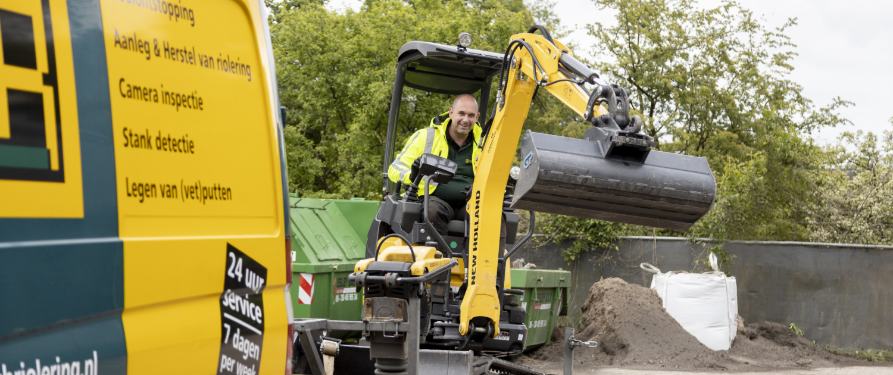
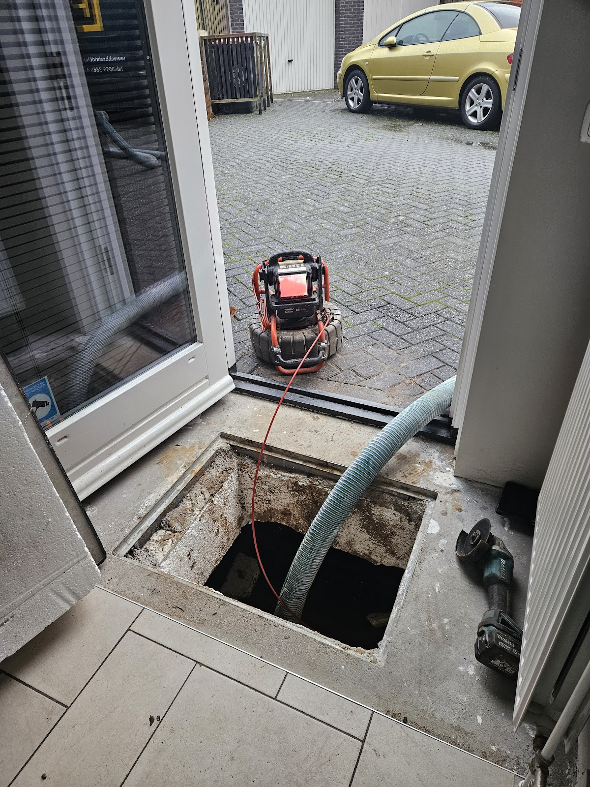
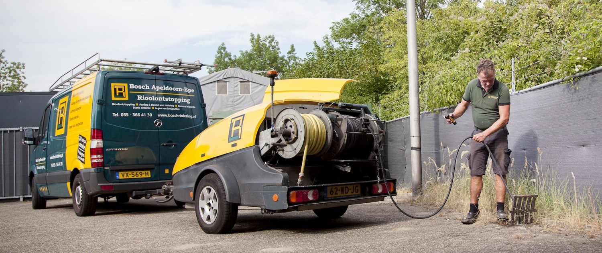
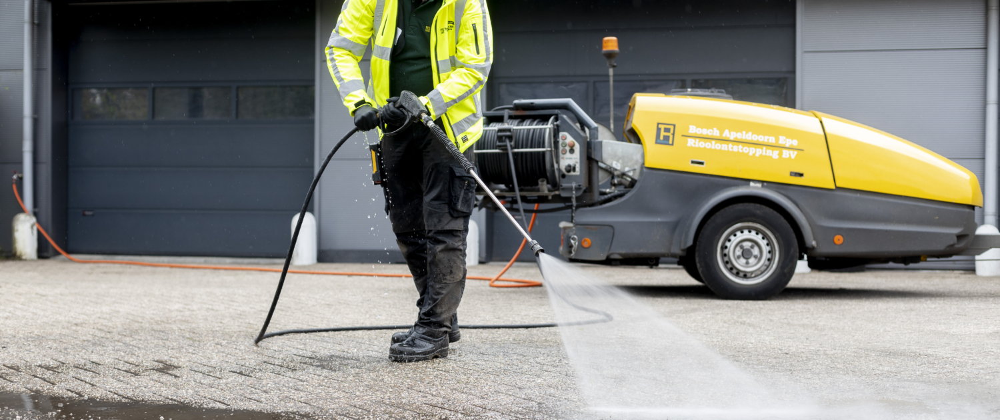
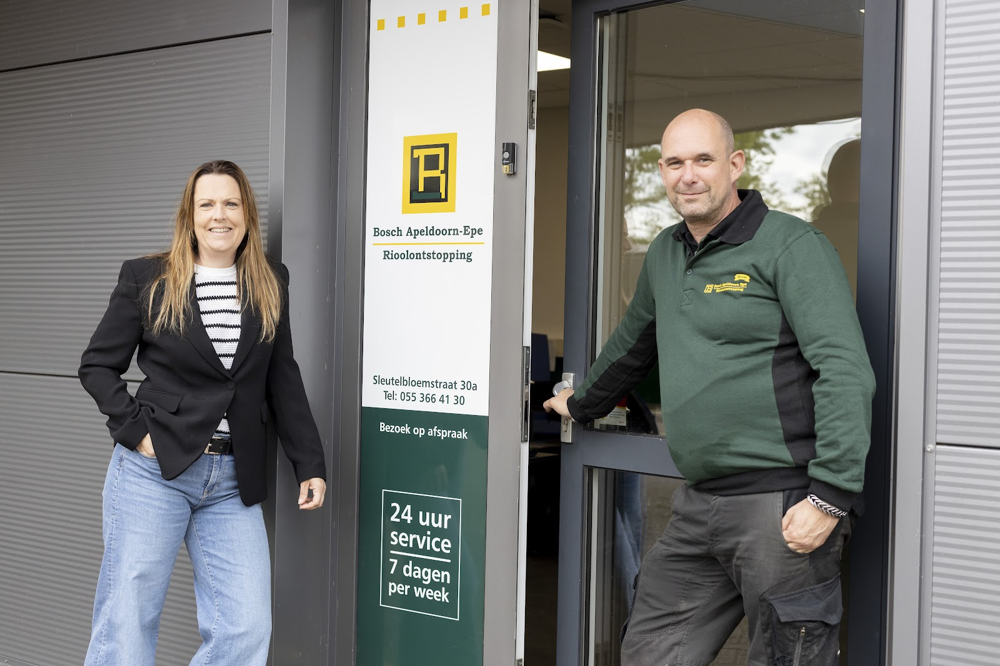

Riool verstopt? Wij komen, ook vannacht.
Het ontstoppingsbedrijf voor Gelderland en Overijssel. Verstoppingen, rioolschade en stank lossen we snel en hygiënisch op, 24 uur per dag, 7 dagen per week.
- Bereikbaar
- 24 uur, 7 dagen
- Google-reviews
- 4,8 uit 98
- Verstoppingen per jaar
- 2500
- Werkgebied
- Gelderland en Overijssel

Rioolontstopping
Een simpele ontstopper is vaak niet genoeg. Wij ontstoppen rioleringen en afvoeren van 32 tot 400 mm, met waterdruk of met veermachines. Onze wagens hebben hun eigen water bij zich, dus we kunnen ook werken waar geen kraan in de buurt is.
- Waterdruk
- 10 tot 200 bar
- Hogedrukslang
- 100 meter
- Watertank per wagen
- 900 liter
- Debiet
- ruim 75 l/min
Alles onder de grond, en wat eruit komt
Niet alleen verstoppingen. Voor aanleg en herstel werken we met KOMO gecertificeerde materialen.
-
Aanleg en herstel
Scheuren en slijtage geven lekkage, stank, wortelgroei en ongedierte. Wij herstellen of leggen nieuw aan met een 100% elektrische graafmachine, versmalbaar tot 75 cm. Ook een gleuf voor een laadkabel.
-
Rioolinspectie
Camera's voor leidingen van 32 tot 250 mm, met zender. We zien scheuren, verzakkingen en boomwortels en wijzen de plek en diepte precies aan, zonder graaf- of breekwerk.
-
Stank- en lekinspectie
Rioollucht in huis? Met de camera of met onze rookmachine vinden we de breuk, opening of vergeten aansluiting snel.
-
(Vet)putten, kelders en kruipruimtes
Ondergelopen kelder of kruipruimte? Wij zuigen leeg met onze tractor met 7 m³ vacuümtank. Vetputten legen, schonen en inspecteren we ook.
-
Rattenoverlast
We zoeken uit waar ratten en ander ongedierte vandaan komen en lossen het probleem snel op.
-
Legionellabestrijding
Onze aanhanger verwarmt het water met branders tot boven de 68°, met 100 meter slang. Zo komen we bijna overal bij.
Wacht bij een verstopping niet te lang. De druk kan leiden tot scheuren, lekkage, stank en wateroverlast.
Bel 055 366 41 30Eigen materieel, klaar voor vertrek
Geen klus te lastig: we werken met eigen wagens en machines die op de moeilijkste plekken komen.




Wat klanten zeggen
4,8 gemiddeld uit 98 Google-reviews
"Een aanrader als je een verstopping hebt. Het begon al met een prettig gesprek aan de telefoon. Wordt direct actie ondernomen en binnen een paar uur stond de monteur aan de deur. Zeer kundige en aardige monteur die het probleem snel heeft verholpen. Nogmaals hartelijk dank van juliie deskundige hulp."
"Verstopt riool waardoor regenwater niet wegloopt in tuin en via schuifpui naar binnen loopt... Help! Bosch heeft het snel en vakkundig verholpen en liet mij ook zelf zien waar het probleem zat (en tips om een verstopping in de toekomst te voorkomen!). Prima en snelle service dus!"
"Het is natuurlijk vervelend als je om hulp moet vragen vanwege een verstopping. Maar de snelheid en professionaliteit waarmee dit wordt opgelost is absoluut TOP te noemen."
"Vorige week moest er, na asbestsanering, nieuwe riolering aangelegd worden op 2 hoeken van ons appartementencomplex. Direct na de veiligheidsmeting gingen de mannen van Bosch aan de slag zodat de bewoners weer gebruik konden maken van sanitair en keuken."

Vanuit Apeldoorn, voor de hele regio
Problemen met het riool komen altijd op het verkeerde moment. Daarom zijn we dag en nacht bereikbaar en rijden onze wagens vanaf de Sleutelbloemstraat uit door Gelderland en Overijssel.
Wat klanten vooral noemen: een monteur die laat zien waar het probleem zit, de mogelijkheden helder uitlegt en het daarna vakkundig verhelpt.
- Mobiel
- 06 113 624 18
- info@boschriolering.nl
- Adres
- Sleutelbloemstraat 30-a
7322 AG Apeldoorn - Openingstijden
- Maandag tot en met zondag
24 uur geopend